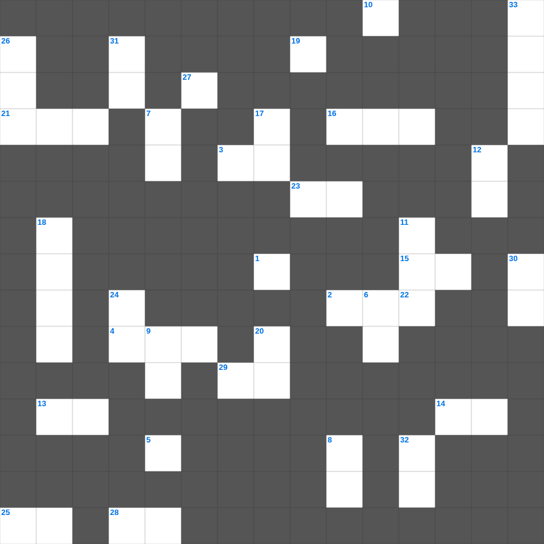

누가복음 마스터 100 (1/2)
📌 서비스 정의
십자가로세로는 교회 주보와 주일학교에서 사용할 수 있는 성경 기반 가로세로 퍼즐 서비스입니다. 성경 인물, 사건, 핵심 구절을 바탕으로 제작되었습니다. 온라인 풀이 및 인쇄 기능을 제공합니다.
📖 누가복음란?
누가복음은 의사 출신 저자 누가가 예수님을 모든 인류, 특히 소외된 자들을 위한 구원자로 그려낸 복음서로, 자세한 역사적 정황과 비유들이 풍부합니다.
📚 누가복음의 주요 사건·주제
예수님의 탄생 이야기(목자들과 천사) · 선한 사마리아인 비유 · 탕자(잃은 아들) 비유 · 예수님의 십자가와 부활 · 엠마오로 가는 길의 만남
무료로 즐기는 누가복음 누가복음 성경공부 자료! 35개의 힌트로 구성된 가로세로 낱말 퍼즐입니다. PC와 모바일 모두 지원되며, 정답을 바로 확인할 수 있어 혼자서도 쉽게 풀 수 있습니다.

📝 가로 힌트
1. 빛을 이것이라 부르시고 어둠을 밤이라 부르심
2. 이스라엘은 이미 이것을 잊어버리고 왕궁들을 세웠으며
3. 주께서 나를 모든 악한 일에서 건져내시고 또 그의 이것 나라에 들어가도록 구원하시리니
4. 나를 믿는 자는 성경에 이름과 같이 그 배에서 이것의 강이 흘러나오리라
5. 순종할 때의 복 '성읍에서도 복을 받고 이것에서도 복을 받으며'
9. 나팔 소리로 찬양하며 비파와 이것으로 찬양할지어다
13. 바울이 게바를 책망하며 말하기를 '사람이 의롭게 되는 것은 이것의 행위로 말미암음이 아니요'
14. 인구 조사 대상 '이십 세 이상으로 이것에 나갈 만한 자'
15. 나를 따라오라 내가 너희로 사람을 낚는 이것이 되게 하리라
16. 바울이 형제들에게 문안할 때 어떻게 하라고 했나: 거룩하게 이것함으로
21. 여호수아가 태양아 멈추라고 명한 장소
22. 누가 누구에게 불만이 있거든 서로 용납하여 피차 용서하되 이것께서 너희를 용서하신 것 같이 너희도 그리하고
23. 마리아의 찬가(Magnificat): 내 영혼이 주를 이것 하며
25. 디도서 1장에서 할례파의 입을 막으라고 한 이유: 무엇을 무너뜨리기 때문인가
27. 가나안은 이것과 꿀이 흐르는 땅
28. 모든 제사는 하나님의 이것을 따라야 함
29. 모든 지킬 만한 것 중에 더욱 네 이것을 지키라 생명의 근원이 이에서 남이니라
📝 세로 힌트
5. 잃은 양 비유: 양 백 마리가 있는데 그 중의 하나를 잃으면 아흔아홉 마리를 이것에 두고
6. 여호사밧이 하나님을 신뢰하자 주변 나라들이 보낸 것
7. 빌레몬서에서 바울이 보인 태도: 명령보다 이것
8. 베드로가 오순절 설교 때 인용한 선지서
9. 베드로의 신앙고백 직후 예수께서 처음으로 예고하신 것
10. 모든 것이 가하나 모든 것이 이것을 세우는 것은 아니니
11. 내가 주를 힘입어 너희를 명하노니 모든 형제에게 이 편지를 이것하라
12. 라합이 정탐꾼들을 숨긴 장소 (지붕의 이것)
17. 일의 이것을 다 들었으니 하나님을 경외하고 그의 명령들을 지킬지어다
18. 에스라가 가져온 은은 몇 달란트인가
19. 베드로후서 2장 20절: 나중 형편이 처음보다 더 이것하게 되리니
20. 여호와여 내가 알거니와 사람의 길이 자신에게 있지 아니하니 이것을 걷는 자에게 있지 아니하니이다
24. 민간에 거짓 선지자들이 일어났었나니 이와 같이 너희 중에도 거짓 이것들이 있으리라
26. 그 귀를 진리에서 돌이켜 허탄한 이것을 따르리라
30. 오직 하나님께 옳게 여기심을 입어 복음을 위탁받았으니 우리가 이와 같이 말함은 사람을 기쁘게 하려 함이 아니요 오직 우리 마음을 이것하시는 하나님을 기쁘시게 하려 함이라
31. 헤브론 땅을 기업으로 요구한 85세의 용사
32. 예레미야가 전한 말씀의 핵심: '항복하면 이것다'
33. 디모데후서가 기록된 장소
🧩 이 퍼즐에서 배우는 내용
이 퍼즐은 누가복음 마스터 100 (1/2)의 핵심 단어와 개념을 자연스럽게 복습할 수 있도록 구성되었습니다. 주일학교 수업이나 개인 성경공부에서 학습 내용을 점검하는 용도로 바로 활용할 수 있습니다.
🧑🏫 교회 교육 자료 활용
이 퍼즐은 주일학교 교재 추천 자료로 활용할 수 있고, 주일학교 주보에 넣기 좋은 분량으로 구성되어 있습니다. 수업용 주일학교 교안에 활동지로 붙이거나, 예배 후 복습용 주일학교 공과교재로 바로 사용할 수 있습니다.
🏷️ 키워드
누가복음 성경공부 자료, 누가복음, 십자가로세로, 성경퀴즈, 말씀퀴즈, 가로세로퍼즐, 주일학교 교재 추천, 주일학교 주보, 주일학교 교안, 주일학교 공과교재